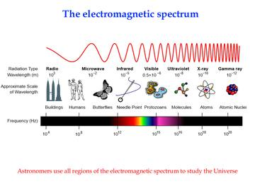
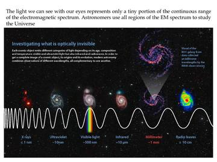
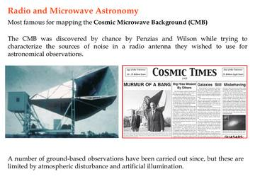
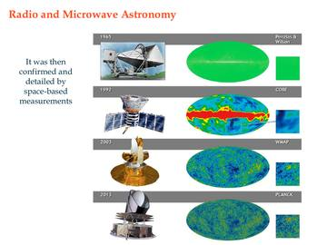
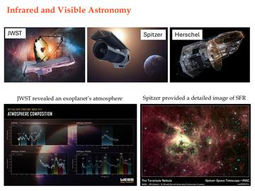
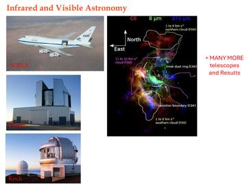
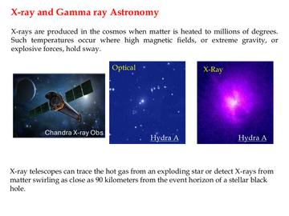
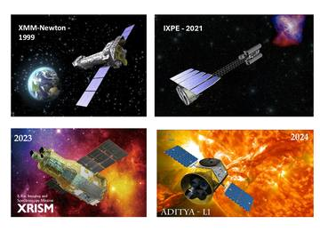
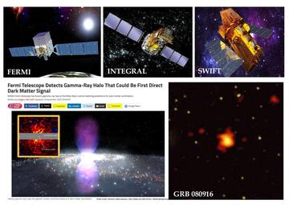

L1 Multiwavelength AstronomyL1 Thiên văn đa bước sóng
The same object looks different in radio, infrared, visible, X-ray and gamma light, because each band is made by different physics. We need all of them to understand an object, and we must go to space for the bands the atmosphere absorbs. This lecture has almost no formulas: learn to recognise bands, observatories and examples.Cùng một vật thể trông khác nhau ở sóng radio, hồng ngoại, khả kiến, tia X và gamma, vì mỗi dải do một loại vật lý khác tạo ra. Cần mọi dải để hiểu một vật thể, và phải lên không gian để quan sát những dải mà khí quyển hấp thụ. Bài này gần như không có công thức: hãy nhớ cách nhận ra dải sóng, đài quan sát và ví dụ.
L1 23 slide pages · 25 practice questions23 trang slide · 25 câu luyện tập · Practice this lectureLuyện bài này
Memory hooksMẹo nhớ
Bands at a glanceCác dải trong một bảng
| BandDải | What it showsCho thấy gì | Observatories on the slidesĐài quan sát trên slide | Example on the slidesVí dụ trên slide |
|---|---|---|---|
| Radio, microwaveRadio, vi sóng | cold gas, CMBkhí lạnh, CMB | COBE, WMAP, Planck; ALMA, SKA (ground)COBE, WMAP, Planck; ALMA, SKA (mặt đất) | Penzias and Wilson 1965Penzias và Wilson 1965 |
| InfraredHồng ngoại | cool regions behind dust, star formation, exoplanet atmospheresvùng lạnh sau bụi, tạo sao, khí quyển ngoại hành tinh | JWST, Spitzer, Herschel; SOFIA; VISTA, KeckJWST, Spitzer, Herschel; SOFIA; VISTA, Keck | B68, WASP-39 b, TarantulaB68, WASP-39 b, Tarantula |
| VisibleKhả kiến | stars, galaxies as the eye sees themsao, thiên hà như mắt thấy | Hubble (space); Rubin and ELTs (ground)Hubble (không gian); Rubin và ELT (mặt đất) | M51, Hydra A (optical)M51, Hydra A (quang học) |
| UltravioletTử ngoại | hot young stars (not detailed on the slides)sao trẻ nóng (slide không nêu chi tiết) | none namedkhông nêu | M51 at ~10 nmM51 ở ~10 nm |
| X-rayTia X | gas heated to millions of degrees, black-hole surroundingskhí nóng hàng triệu độ, vùng quanh lỗ đen | Chandra, XMM-Newton, IXPE, XRISMChandra, XMM-Newton, IXPE, XRISM | Hydra A, planets and the MoonHydra A, các hành tinh và Mặt Trăng |
| GammaGamma | annihilation, decays, extreme particle acceleratorshủy cặp, phân rã, máy gia tốc hạt cực đoan | FERMI, INTEGRAL, SWIFT, GRANATFERMI, INTEGRAL, SWIFT, GRANAT | 1E 1740-2942, GRB 0809161E 1740-2942, GRB 080916 |
The electromagnetic spectrumPhổ điện từ
- Wavelength (m) on the slide: radio 10³, microwave 10⁻², infrared 10⁻⁵, visible 0.5×10⁻⁶, ultraviolet 10⁻⁸, X-ray 10⁻¹⁰, gamma 10⁻¹². Frequency axis from 10⁴ to 10²⁰ Hz. [L1 p2]Bước sóng (m) trên slide: radio 10³, vi sóng 10⁻², hồng ngoại 10⁻⁵, khả kiến 0,5×10⁻⁶, tử ngoại 10⁻⁸, tia X 10⁻¹⁰, gamma 10⁻¹². Trục tần số từ 10⁴ đến 10²⁰ Hz. [L1 tr.2]
- Scale of the wavelength: buildings (radio) → butterflies (microwave) → needle point (infrared) → protozoans (visible) → molecules (UV) → atoms (X-ray) → atomic nuclei (gamma). [L1 p2]Kích thước cỡ bước sóng: tòa nhà (radio) → bướm (vi sóng) → đầu kim (hồng ngoại) → động vật nguyên sinh (khả kiến) → phân tử (tử ngoại) → nguyên tử (tia X) → hạt nhân (gamma). [L1 tr.2]
- Eyes see only a tiny part. Example band centres for the galaxy M51: X-ray ≤ 1 nm, UV ~10 nm, visible ~500 nm, infrared ~10 µm, millimetre ~1 mm, radio ≥ 10 cm. [L1 p3]Mắt chỉ thấy một phần rất nhỏ. Dải ví dụ cho thiên hà M51: tia X ≤ 1 nm, tử ngoại ~10 nm, khả kiến ~500 nm, hồng ngoại ~10 µm, milimét ~1 mm, radio ≥ 10 cm. [L1 tr.3]
- Each object emits different kinds of light depending on its age, composition and temperature; the bands are complementary. [L1 p3]Mỗi vật thể phát ra các loại ánh sáng khác nhau tùy tuổi, thành phần và nhiệt độ; các dải bổ sung cho nhau. [L1 tr.3]


The atmosphere absorbs most bandsKhí quyển hấp thụ phần lớn các dải
- Gamma, X-ray, UV and much of the infrared are absorbed; the visible and radio windows reach the ground. (read from the figure) [L1 p4]Gamma, tia X, tử ngoại và phần lớn hồng ngoại bị hấp thụ; cửa sổ khả kiến và radio tới được mặt đất. (đọc từ hình) [L1 tr.4]
- Above the atmosphere: WEBB, ROMAN, EUCLID, CHANDRA, FERMI, HUBBLE. Airborne: SOFIA. On the ground: ALMA, RUBIN and ELTs, SKA. [L1 p4]Trên khí quyển: WEBB, ROMAN, EUCLID, CHANDRA, FERMI, HUBBLE. Trên máy bay: SOFIA. Trên mặt đất: ALMA, RUBIN và các ELT, SKA. [L1 tr.4]
- Computer image processing turns the detected light into pictures we can see. [L1 p4]Xử lý ảnh bằng máy tính biến ánh sáng thu được thành hình ảnh nhìn thấy. [L1 tr.4]

Radio and microwave: the CMBRadio và vi sóng: nền vi sóng vũ trụ
- Most famous for mapping the Cosmic Microwave Background (CMB). [L1 p5]Nổi tiếng nhất là lập bản đồ nền vi sóng vũ trụ (CMB). [L1 tr.5]
- The CMB was found by chance by Penzias and Wilson (1965) while they studied noise in a radio antenna. [L1 p5-6]CMB được phát hiện tình cờ bởi Penzias và Wilson (1965) khi họ khảo sát nhiễu trong một ăng-ten radio. [L1 tr.5-6]
- Space missions confirmed and detailed it: COBE (1992), WMAP (2003), Planck (2013). Ground observations are limited by atmospheric disturbance and artificial illumination. [L1 p5-6]Các sứ mệnh vũ trụ xác nhận và chi tiết hóa: COBE (1992), WMAP (2003), Planck (2013). Quan sát mặt đất bị giới hạn bởi nhiễu khí quyển và ánh sáng nhân tạo. [L1 tr.5-6]


Infrared and visibleHồng ngoại và khả kiến
- Infrared sees cool, hidden regions and penetrates cosmic dust that blocks visible light: the dark cloud B68 is black in optical but shows stars in infrared. [L1 p7]Hồng ngoại thấy vùng lạnh, bị che; nó xuyên qua bụi vũ trụ chắn ánh sáng khả kiến: đám mây tối B68 đen ở quang học nhưng lộ sao ở hồng ngoại. [L1 tr.7]
- Uses: heat signatures of planets and small bodies; earliest galaxies (redshifted infrared); chemical composition by infrared spectroscopy; star-forming regions. [L1 p7]Công dụng: dấu nhiệt của hành tinh và vật thể nhỏ; thiên hà sớm nhất (hồng ngoại bị dịch đỏ); thành phần hóa học bằng quang phổ hồng ngoại; vùng tạo sao. [L1 tr.7]
- Space: JWST (revealed the atmosphere of the exoplanet WASP-39 b), Spitzer (detailed image of star formation in the Tarantula Nebula), Herschel. [L1 p8]Trong không gian: JWST (cho thấy khí quyển ngoại hành tinh WASP-39 b), Spitzer (ảnh chi tiết vùng tạo sao Tinh vân Tarantula), Herschel. [L1 tr.8]
- Airborne and ground: SOFIA, VISTA, Keck, and many more telescopes. [L1 p9-10]Máy bay và mặt đất: SOFIA, VISTA, Keck và nhiều kính khác. [L1 tr.9-10]



X-ray astronomyThiên văn tia X
- X-rays are produced when matter is heated to millions of degrees: strong magnetic fields, extreme gravity or explosive forces. [L1 p11]Tia X sinh ra khi vật chất bị nung tới hàng triệu độ: từ trường mạnh, trọng lực cực lớn hoặc lực nổ. [L1 tr.11]
- Chandra (launched 1999 on Space Shuttle Columbia) defines hot, turbulent regions: Hydra A in optical and X-ray; matter as close as 90 km from the event horizon of a stellar black hole. [L1 p11-12]Chandra (phóng 1999 bằng tàu con thoi Columbia) xác định vùng nóng, hỗn loạn: Hydra A ở quang học và tia X; vật chất cách chân trời sự kiện của lỗ đen sao tới 90 km. [L1 tr.11-12]
- Solar-System X-ray images: Uranus, Jupiter, Venus, Mars, the Moon (optical vs X-ray). Greater clarity helps answer questions about the origin, evolution and destiny of the universe. [L1 p12-18]Ảnh tia X trong Hệ Mặt Trời: Thiên Vương, Mộc, Kim, Hỏa, Mặt Trăng (quang học so với tia X). Độ nét cao hơn giúp trả lời câu hỏi về nguồn gốc, tiến hóa và số phận vũ trụ. [L1 tr.12-18]
- Other X-ray missions: XMM-Newton (1999), IXPE (2021), XRISM (2023), Aditya-L1 (the slide says 2024). [L1 p19]Các sứ mệnh tia X khác: XMM-Newton (1999), IXPE (2021), XRISM (2023), Aditya-L1 (slide ghi 2024). [L1 tr.19]



Gamma-ray astronomyThiên văn tia gamma
- Four ways to make gamma rays: accelerated electrons interacting with matter, magnetic and photon fields; decay of unstable particles; matter-antimatter annihilation; nuclear de-excitation. [L1 p20]Bốn cách tạo gamma: electron được gia tốc tương tác với vật chất, từ trường và trường photon; phân rã hạt không bền; hủy cặp vật chất - phản vật chất; khử kích thích hạt nhân. [L1 tr.20]
- Sources: hot plasma around compact objects (neutron stars, black holes), relativistic plasma, media contaminated by radioactive species, extremely luminous sources at high redshift. Example: 1E 1740-2942 near the Galactic centre (GRANAT; Mirabel 1992, Goldwurm 1994). [L1 p20]Nguồn: plasma nóng quanh vật thể đặc (sao neutron, lỗ đen), plasma tương đối tính, môi trường nhiễm đồng vị phóng xạ, nguồn cực sáng ở dịch chuyển đỏ lớn. Ví dụ: 1E 1740-2942 gần tâm Ngân Hà (GRANAT; Mirabel 1992, Goldwurm 1994). [L1 tr.20]
- Missions: FERMI, INTEGRAL, SWIFT; gamma-ray burst GRB 080916; Fermi saw a gamma-ray halo near the Galactic centre that could be a dark-matter signal (news item). [L1 p21]Sứ mệnh: FERMI, INTEGRAL, SWIFT; chớp gamma GRB 080916; Fermi thấy quầng gamma gần tâm Ngân Hà có thể là tín hiệu vật chất tối (tin trên slide). [L1 tr.21]


All-sky maps and one object in many bandsBản đồ toàn trời và một vật thể ở nhiều dải
- All-sky maps at different wavelengths: radio 430 MHz, IR, visible, X-ray, 1.809 MeV, > 100 MeV, > 1 GeV, 21 cm, Hα 656 nm, dust, free-free, CO, 511 keV. [L1 p22]Bản đồ toàn trời ở các bước sóng khác nhau: radio 430 MHz, IR, khả kiến, tia X, 1,809 MeV, > 100 MeV, > 1 GeV, 21 cm, Hα 656 nm, bụi, free-free, CO, 511 keV. [L1 tr.22]
- The 511 keV line is the electron rest energy: m_e c² = 0.511 MeV [calc], the signature of electron-positron annihilation (slide p20 lists annihilation).Vạch 511 keV bằng năng lượng nghỉ của electron: m_e c² = 0,511 MeV [tính], dấu hiệu của hủy cặp electron - positron (slide tr.20 nêu hủy cặp).
- The last slide combines one jet-producing source (it looks like M87; read from the figure) from radio (EHT 1.3 mm, ALMA, VLBA) through optical (HST) and X-ray (Chandra, NuSTAR) to gamma (Fermi-LAT, HESS, MAGIC, VERITAS); wavelength axis 10² to 10⁻²⁰ m. [L1 p23]Slide cuối ghép một nguồn có jet (trông như M87; đọc từ hình) từ radio (EHT 1,3 mm, ALMA, VLBA) qua quang học (HST) và tia X (Chandra, NuSTAR) tới gamma (Fermi-LAT, HESS, MAGIC, VERITAS); trục bước sóng 10² đến 10⁻²⁰ m. [L1 tr.23]


Quick Q and AHỏi đáp nhanh
Why do astronomers observe at many wavelengths?Vì sao nhà thiên văn quan sát nhiều bước sóng?
Each band is produced by different physics (temperature, composition, age), so the observations are complementary. [L1 p3, p23]Mỗi dải do vật lý khác nhau tạo ra (nhiệt độ, thành phần, tuổi) nên các quan sát bổ sung cho nhau. [L1 tr.3, 23]
Why is B68 dark in the optical but not in the infrared?Vì sao B68 tối ở quang học mà không tối ở hồng ngoại?
Dust absorbs visible light; infrared passes through the dust and shows the stars behind. [L1 p7]Bụi hấp thụ ánh sáng khả kiến; hồng ngoại xuyên qua bụi và cho thấy các sao phía sau. [L1 tr.7]
Which bands need space telescopes?Dải nào cần kính vũ trụ?
Gamma, X-ray, UV and much of the infrared, because the atmosphere absorbs them; visible and radio mostly reach the ground. [L1 p4]Gamma, tia X, tử ngoại và phần lớn hồng ngoại, vì khí quyển hấp thụ; khả kiến và radio phần lớn tới mặt đất. [L1 tr.4]
How was the CMB discovered?CMB được phát hiện thế nào?
By chance: Penzias and Wilson were characterising noise in a radio antenna (1965); COBE, WMAP, Planck then mapped it. [L1 p5-6]Tình cờ: Penzias và Wilson đang khảo sát nhiễu trong ăng-ten radio (1965); sau đó COBE, WMAP, Planck lập bản đồ. [L1 tr.5-6]
[L2 p9] = lecture L2, slide page 9. [calc] = computed here and checked in Python. [ext] = not on the slides.[L2 tr.9] = bài L2, trang slide 9. [tính] = tính ở đây và kiểm trong Python. [ngoài slide] = không có trên slide.